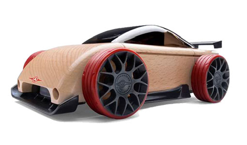

About Automoblox Toy Cars




Automoblox is a line of high-quality wooden toy cars that combine traditional craftsmanship with modern design. These unique toys allow children to assemble and disassemble parts, promoting creativity and fine motor skills.
Founded in 2004, Automoblox has become a beloved brand, known for its durable and interchangeable components. Each car features sleek lines and vibrant colors, making them a favorite among kids and collectors alike.
At Automoblox, we strive to inspire imaginative play while ensuring our toys are environmentally friendly, using sustainable wood and non-toxic materials in our manufacturing process.
Explore our range of car kits and let your child experience the joy of creativity and play with Automoblox!